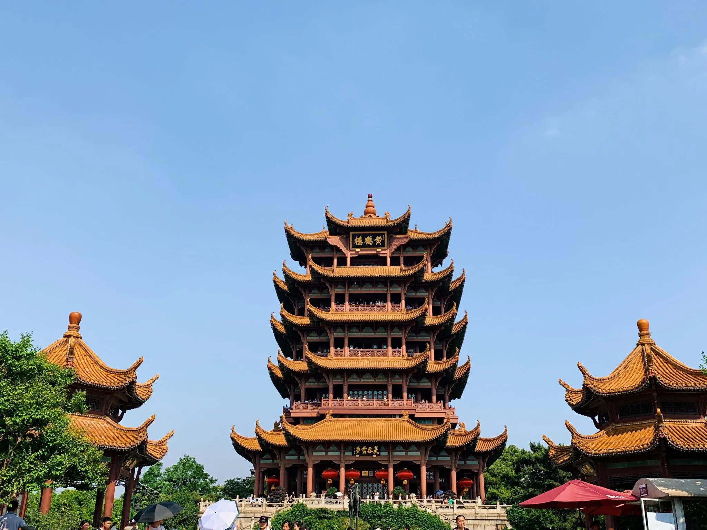
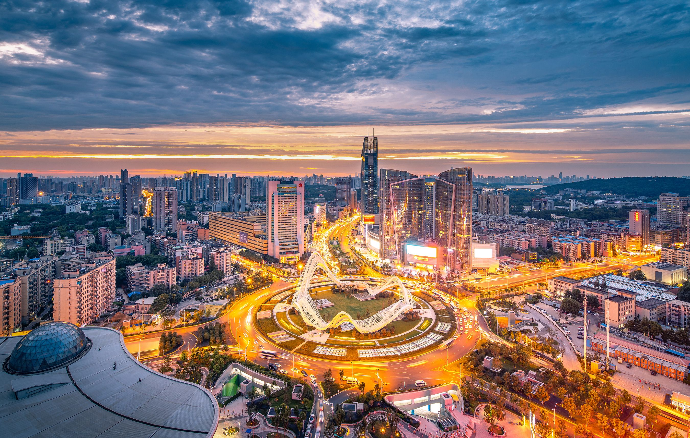
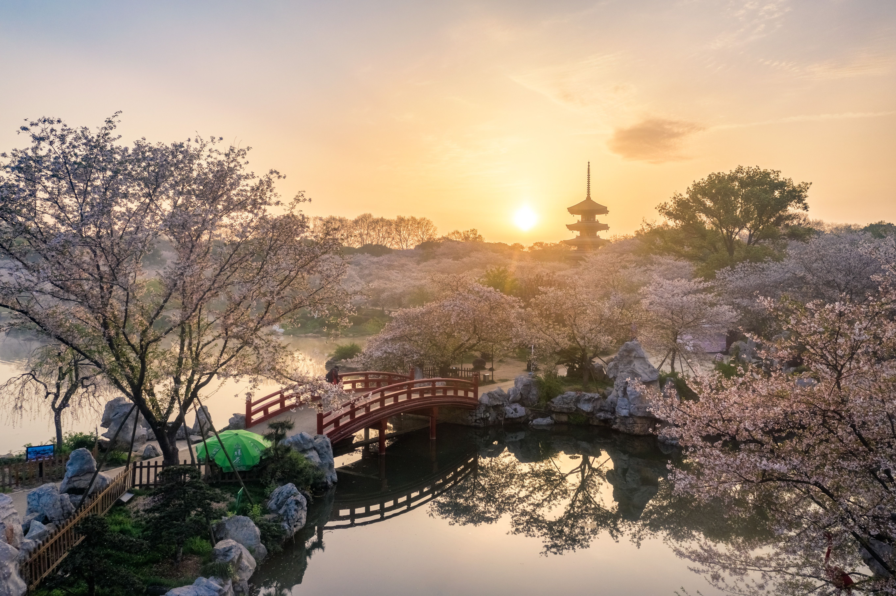

Explore Wuhan
Yellow Crane Tower
The Yellow Crane Tower is located at the Yellow Crane Jitou of Snake Mountain in Wuhan, facing Parrot Island. It is one of the three famous buildings in China. The Yellow Crane Tower was first built during the Three Kingdoms period and has been repeatedly destroyed and built throughout history. Although it has been rebuilt now, the site of the tower is still at the top of Snake Mountain. The main building is 49m high, with five floors in total. It has spires and cornices. The diameter of the outer eaves columns on the bottom floor is 30 meters, and there are large reliefs on the front wall of the central hall, depicting the myths and legends related to the Yellow Crane Tower throughout history. A mezzanine corridor is set up on the third floor to display poetry, calligraphy, and painting. The Yellow Crane Tower is an important landmark building in Wuhan City and one of the four famous ancient buildings in China. It is known as the "Number One Tower in the World".
Guanggu
Guanggu Square is a new business card and landmark of Wuhan, integrating transportation, shopping, and leisure. Its construction took more than a decade, incorporating profound traditional Chinese cultural elements. It boasts one of the largest urban underground complexes in Asia and the largest single steel structure public art piece in China.
East Lake
Donghu Scenic Area is located in the center of Wuhan City and is a national 5A level tourist attraction, a demonstration site of national civilized scenic tourism, and one of the first batch of national key scenic spots. The total area of Donghu Scenic Area is 88 square kilometers, of which the lake area is 33 square kilometers. There is a national wetland park within the scenic area, with 13 plant specific gardens including Donghu Plum Garden, Lotus Garden, and Donghu Cherry Garden. There are abundant plant resources in the Donghu Scenic Area, including plum blossoms, lotus flowers, and others, especially plum blossoms, which are the most famous local specialty. In addition, there are also scenic spots such as Lotus Pond and Lotus Square. The natural environment of Donghu Scenic Area is beautiful, with fresh air and convenient transportation, making it one of the famous tourist attractions in Wuhan city.